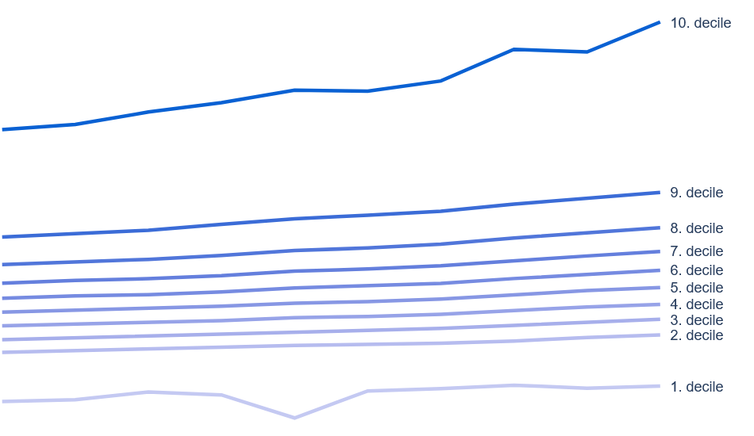

Mikkel Wittenburg Petersen
About
Projects

Inequality in Danish municipalities
A web app created with the Python modules Streamlit and Plotly. Data is from the Statistics Denmark’s API for StatBank using the requests module.
View source code